קאפיטל 6
דער דרייווערס קאקפיט און דעשבארד
זייטן 88–112 אינעם PDF
די קאקפיט מיט איין בליק
אלעס וואס דער דרייווער דארף בשעת'ן דרייוון איז נאענט צום סטירינג ווייל: דער אינסטרומענט קלאסטער, די אינדיקאטאר לייטס, דער 7-אינטש דרייווער אינפארמאציע סקרין, די קנעפלען אויפן סטירינג ווייל, די צוויי שטעקנס (stalks), דער ENGINE START/STOP קנעפל (דער אנצינד-קנעפל) און די סוויטשעס ארום אייך. איין פאקט באשטימט דעם גאנצן קאפיטל. Honda'ס אפיציעלע ספעציפיקאציעס שרייבן אז די EX האט א 7-אינטש TFT מעטער דיספליי, און דער אונער'ס מאנואל רופט עס דער A-type meter (דער A-טיפ מעטער). יעדעס מאל וואס דער מאנואל זאגט "B-type meter", מיינט ער דעם 10.2-אינטש דיגיטאלן קלאסטער אויף דער EX-L, נישט אייער קאר. יעדע סקרין פראצעדור אין דעם קאפיטל באשרייבט די A-type ווערסיע. א טייל B-type פראצעדורן ניצן א רעכטן סעלעקטאר ראדל; די A-type ניצט אנשטאט דעם דעם home קנעפל און דאס לינקע סעלעקטאר ראדל.

אט איז די איינטיילונג. גלייך הינטער'ן סטירינג ווייל איז דער אינסטרומענט קלאסטער, מיט'ן ספידאמעטער, דעם בענזין מעסטער, די אינדיקאטאר לייטס און דעם 7-אינטש דרייווער אינפארמאציע סקרין. אין מיטן דעשבארד איז דער 9-אינטש טאטש סקרין, וואס ווערט באהאנדלט אין קאפיטל 7. אויפן סטירינג ווייל זענען די קנעפלען פאר אודיא, טעלעפאן, קרוז קאנטראל און די קלאסטער סקרינס. הינטער'ן ראד זענען צוויי שטעקנס: לייטס און בלינקערס אויף לינקס, ווייפערס אויף רעכטס. דער ENGINE START/STOP קנעפל און דער קליימעט פאנעל מיט'ן קנעפל פאר'ן הינטערשטן דעפאגער פארענדיגן די קאקפיט. Honda'ס פיטשער גייד זאגט דעם ציל פונעם דיזיין: קאנטראלן ביי די פינגער פונעם דרייווער פארמינערן אפלענקונג און האלטן די אויגן פונעם דרייווער אויפן וועג.
דער סטירינג ווייל ווי א רימאוט קאנטראל
Honda'ס פיטשער גייד זאגט אז אלע CR-V מאדעלן האבן קנעפלען אויפן סטירינג ווייל פאר קרוז קאנטראל, אודיא און Bluetooth HandsFreeLink (הענט-פרייע טעלעפאן). זיי האבן אויך קנעפלען צו עפענען און איינשטעלן דעם דיגיטאלן אינסטרומענט קלאסטער. אין פראקטיק ארבעט דער ראד ווי א רימאוט קאנטראל פאר'ן קלאסטער. צוויי קאנטראלן וועט איר כסדר ניצן: דעם home קנעפל און דאס לינקע סעלעקטאר ראדל. דאס סעלעקטאר ראדל איז א קליין רעדל וואס מען קען דרייען ארויף, דרייען אראפ, און דריקן ווי א קנעפל. כמעט יעדן קלאסטער סקרין דערגרייכט מען דורך דריקן home און דרייען דאס ראדל.
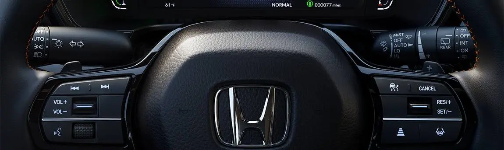
די אודיא רימאוט קאנטראלן ארבעטן אויך אן די קלאסטער מעניוס. דער VOL+ און VOL- סוויטש (וואליום) הייבט די וואליום ווען מען דריקט ארויף און לאזט עס אראפ ווען מען דריקט אראפ. די seek/skip קנעפלען (זוכן/ איבערשפרינגען) ארבעטן לויט דעם מקור, ווי די טאבעלע ווייזט.
Seek/skip קנעפלען אויפן סטירינג ווייל
| מקור | דריקן | דריקן און האלטן |
|---|---|---|
| ראדיא | נעקסטע אדער פריערדיגע געשפייכלטע סטאנציע | נעקסטע אדער פריערדיגע שטארקע סטאנציע |
| מיט קאבל, USB, Bluetooth, סמארטפאון | נעקסטע ליד, אדער צוריק צום אנהייב פון דעם יעצטיגן אדער פריערדיגן ליד | (נאר USB) נעקסטע אדער פריערדיגע פאלדער |
די מעסטערס
לויט'ן אונער'ס מאנואל, נעמען די מעסטערס אריין דעם ספידאמעטער, דעם בענזין מעסטער און פארבינדענע אינדיקאטארן, און זיי ווייזן זיך ווען דער power mode (קראפט מאדָע) איז אין ON. דער ספידאמעטער ווייזט אייער גיכקייט אין mph, אדער אין km/h אויב איר טוישט די איינהייטן. דער טאכאמעטער ווייזט די מאטאר דרייאונגען א מינוט, דאס הייסט ווי שנעל דער מאטאר דרייט זיך. אויפן A-type meter קען מען אן- אדער אויסלעשן דעם טאכאמעטער דיספליי אין די vehicle settings (קאר איינשטעלונגען); נאטורליך איז ער אן. אפילו ווען דער טאכאמעטער איז אויסגעלאשן, ווען מען קלייבט אויס דעם "No content" סקרין אינעם דרייווער אינפארמאציע סקרין, ווערט עס א דיספליי וואס ווייזט נאר דעם טאכאמעטער. Honda שרייבט א רעדליין (מאקסימום) פון 6,600 rpm פאר'ן 1.5-ליטער טורבא מאטאר פון דער EX.
בענזין מעסטער און אדאמעטער
דער בענזין מעסטער ווייזט וויפיל בענזין עס בלייבט אינעם 14-גאלאן טאנק. דער מאנואל זאגט קלאר: פילט אן ווען דער ווייזער קומט נאנט צו E. ווען דער בענזין ענדיגט זיך, קען דער מאטאר מאכן א misfri e (פעלער-אנצינדונג), און א misfri e קען שעדיגן דעם catalytic converter, א טייערער טייל פונעם עקזאסט. דער מאנואל ווארנט אויך אז נאך א קליינער אנפילונג, אדער לויט'ן צושטאנד פונעם קאר, קען די אמת'ע מאס בענזין וואס בלייבט זיין אנדערש ווי דער מעסטער ווייזט. אויב איר גיסט אריין נאר פאר עטליכע דאלאר, פארלאזט זיך נישט אינגאנצן אויפן מעסטער. דער אדאמעטער ווייזט די גאנצע מהלך וואס דער קאר איז געפארן, און מען קען אים נישט ריסעטן. די טריפ מעטערס וואס מען קען ריסעטן זענען אינעם דרייווער אינפארמאציע סקרין.
דרויסנדיגע טעמפעראטור
דער קלאסטער ווייזט די דרויסנדיגע טעמפעראטור אין Fahrenheit אויף אמעריקאנער קארס און אין Celsius אויף קאנאדישע קארס. דער סענסאר איז אינעם פראנט באמפער, דערפאר אונטער 19 mph (30 km/h) קענען די היץ פונעם וועג און דער עקזאסט פון אנדערע קארס הייבן די נומער. אין טראפיק פון שטיין און גיין אויף א הייסן טאג, ריכט זיך אויף א הויכע נומער. נאכדעם וואס די טעמפעראטור באפעסטיגט זיך, קען דער דיספליי נעמען עטליכע מינוט ביז ער דערהיינטיגט זיך. אויב די נומער זעט אויס שטענדיג פאלש, קענט איר זי קארעקטירן ביז (3°C±) 5°F± אינעם Meter setup מעניו (מעטער איינשטעלונג).
טראפיק שילדן און הילפס-סיסטעמען סטאטוס
דער קלאסטער ווייזט אויך טראפיק שילדן וואס דער Traffci Sign Recognition סיסטעם (שילדן דערקענונג) כאפט אויף. ער ווייזט אויך דעם יעצטיגן מאדָע פון Adaptive Cruise Control with Low Speed Follow, Lane Keeping Assist און Traffci Jam Assist. קאפיטל 9 דערקלערט ווי די סיסטעמען ארבעטן.
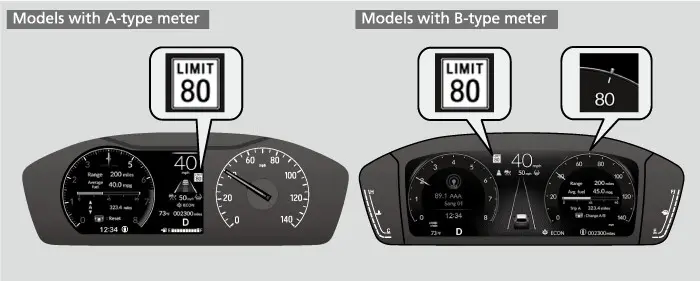
אויב איר צינדט אן די speed limit warning (ווארענונג פאר'ן גיכקייט-גרענעץ), בלינקט דער שילד-אייקאן ווען אייער גיכקייט גייט איבער דעם אויפגעכאפטן גיכקייט-גרענעץ מיט א מאס וואס איר קלייבט אויס. נאטורליך איז די מאס דער גיכקייט-גרענעץ אליין. די אנדערע אויסוואלן זענען speed limit +3, +5 אדער +10 mph; אין km/h זענען די אויסוואלן +10+ ,5 אדער +15 km/h. די ווארענונג פאר צו שנעל איז נאטורליך אויסגעלאשן, בשעת דער שילד דיספליי אליין איז נאטורליך אן.
מאטאר טעמפעראטור
דער מאנואל שרייבט דעם coolant temperature gauge (קילונג טעמפעראטור מעסטער) אונטער'ן B-type meter קעפל, און ווייזט נישט קלאר אז עס איז פאראן איינער פאר'ן A-type meter. טייל מאדעלן האבן אנשטאט דעם א low temperature indicator (נידעריגע טעמפעראטור אינדיקאטאר), באשריבן ווייטער ביי די אינדיקאטארן. אויף ביידע מעטערס, אויב עס ווייזט זיך די מעלדונג "Engine temperature too hot", פארט צו דער זייט אויף א זיכערן אופן. די פראצעדורן פאר איבערהיצונג זענען אין קאפיטל 18.
אינדיקאטאר לייטס: די גרונט כללים
די List of Indicators (ליסטע פון אינדיקאטארן) אינעם מאנואל הייבט זיך אן מיט א וויכטיגן כלל. ווען איר שטעלט דעם power mode אויף ON, צינדן זיך אן אסאך אינדיקאטארן צוזאמען צו ווייזן אז מען מאכט סיסטעם טשעקס. זיי לעשן זיך אויס עטליכע סעקונדעס שפעטער אדער נאכ'ן אנצינדן דעם מאטאר. די קורצע לעמפל-פרוב איז נארמאל. דער אמת'ער ווארענונג סימן איז פונקט פארקערט: אויב א אינדיקאטאר צינדט זיך נישט אן בשעת דעם טשעק, אדער לעשט זיך נישט אויס נאכדעם, קען זיין א פראבלעם אין יענעם סיסטעם. עס קען זיך אויך ווייזן א מעלדונג אינעם דרייווער אינפארמאציע סקרין אין דער זעלבער צייט; טוט וואס זי זאגט, למשל זיך פארבינדן מיט א דילער.
א פשוט'ער פארב-כלל העלפט. רויט מיינט אפשטעלן און האנדלען יעצט. געל (amber) מיינט א פראבלעם וואס דארף אכטונג. ווייס אדער גרין מיינט אז א סיסטעם איז גרייט אדער ארבעט.
דער System Message Indicator (סיסטעם מעלדונג אינדיקאטאר) צינדט זיך אן מיט א ביפ ווען מען כאפט אויף א פראבלעם, און אין דער זעלבער צייט ווייזט זיך א מעלדונג אינעם דרייווער אינפארמאציע סקרין. זוכט אויף די מעלדונג און טוט וואס זי זאגט. דער קלאסטער קומט נישט צוריק צום נארמאלן סקרין ביז די ווארענונג ווערט אפגעשטעלט אדער ביז איר דריקט home.
נאכאמאל לייענען א ווארענונג מעלדונג (A-type meter)
- בשעת דער System Message Indicator איז אן, דריקט דעם home קנעפל.
- דרייט דאס לינקע סעלעקטאר ראדל צו Warnings (ווארענונגען) און קלייבט עס אויס.
- אויב עס זענען דא עטליכע ווארענונגען, דרייט דאס לינקע סעלעקטאר ראדל צו זען יעדע איינע.
- דריקט home צו גיין צוריק צום היים-סקרין.
ברעמז אינדיקאטארן


דער רויטער Parking Brake and Brake System Indicator (פארקינג ברעמז און ברעמז סיסטעם אינדיקאטאר) צינדט זיך אן ווען דער עלעקטרישער פארקינג ברעמז איז אנגעלייגט, און לעשט זיך אויס ווען איר לאזט אים אפ. אויב איר דרייווט מיט'ן פארקינג ברעמז אנגעלייגט, הערט מען א ביפער און דאס ליכט צינדט זיך אן . דאס ליכט צינדט זיך אויך אן פאר בערך 30 סעקונדעס ווען איר לייגט אן דעם פארקינג ברעמז אין ACCESSORY אדער VEHICLE OFF. עס בלייבט אן בערך 30 סעקונדעס ווען איר שטעלט אויף VEHICLE OFF מיט'ן פארקינג ברעמז אנגעלייגט. ביידע פעלער זענען נארמאל. אבער דאס זעלבע ליכט ווארנט אויך פון נידעריגע ברעמז פלואיד אדער א פראבלעם אין ברעמז סיסטעם.
אויב דאס רויטע ברעמז ליכט צינדט זיך אן בשעת'ן דרייוון
- מאכט זיכער אז דער פארקינג ברעמז איז אפגעלאזט.
- דריקט לייכט אויפן ברעמז פעדאל צו פילן ווי ער פילט זיך.
- אויב דער פעדאל פילט זיך נארמאל, טשעקט די ברעמז פלואיד ביים נעקסטן אפשטעל.
- אויב דער פעדאל פילט זיך נישט נארמאל, האנדלט גלייך; אויב נויטיג, גייט אראפ א גאנג צו פארלאנגזאמען דעם קאר מיט'ן מאטאר ברעמזן.
- אויב דער פעדאל האט קיין קעגנשטאנד, שטעלט זיך גלייך אפ אויף א זיכער ארט.

טייל צוזאמענשטעלן פון לייטס זענען ערנסט.
צוזאמענשטעלן פון ברעמז לייטס
| לייטס | באדייט | וואס צו טון |
|---|---|---|
| רויט + געל אן | פראבלעם אין ברעמז סיסטעם; דער פעדאל איז שווערער צו דריקן | שטעלט זיך אפ זיכער יעצט, דריקט דעם פעדאל טיפער ווי נארמאל, פארבינדט זיך מיט א דילער |
| רויט + ABS אן | עלעקטראנישע ברעמז פארטיילונג ארבעט נישט; נישט סטאביל ביי א פלוצלינגדיגן ברעמז | לאזט עס גלייך איבערקוקן |
| רויט בלינקט + געל אן | פראבלעם אין עלעקטרישן פארקינג ברעמז; ער קען זיין נישט אנגעלייגט | ניצט נישט דעם פארקינג ברעמז, שטעלט אויף P, גייט גלייך צו א דילער |
אויב די רויטע און געלע לייטס צינדן זיך אן אדער בלינקען צוזאמען, פרובירט קודם אפלאזן דעם פארקינג ברעמז, מיט דער האנט אדער אויטאמאטיש. אויב זיי בלייבן אן אדער בלינקען ווייטער, שטעלט זיך אפ אויף א זיכער ארט און שטעלט די טראנסמישן אויף P אז דער קאר זאל נישט קענען ראלן. דערנאך לאזט עס גלייך איבערקוקן. אויב נאר דאס רויטע ליכט לעשט זיך אויס, ניצט פארט נישט דעם פארקינג ברעמז, ווייל איר קענט אים אפשר נישט קענען אפלאזן אמאל ער איז אנגעלייגט. דער מאנואל לייגט צו אז ווען רויט און געל צינדן זיך אן צוזאמען, ארבעט דער פארקינג ברעמז. ווען רויט בלינקט מיט געל אן, קען דער פארקינג ברעמז נישט ארבעטן ווייל דער סיסטעם טשעקט זיך אליין.
דער געלער אינדיקאטאר אליין מיינט א פראבלעם אין א ברעמז-פארבינדענעם סיסטעם אחוץ די געווענליכע ברעמזן, למשל דער עלעקטרישער פארקינג ברעמז, דער automatic brake hold (אויטאמאטישע ברעמז-האלט) אדער דער ראדאר סענסאר. אויב ער צינדט זיך אן בשעת'ן דרייוון, פארט נישט שנעל, ברעמזט נישט פלוצלינג און גייט גלייך צו א דילער. אויב ער בלייבט שטענדיג אן, ניצט אויך נישט דעם פארקינג ברעמז. נאכדעם וואס די 12-וואלט באטעריע איז געווען אפגעשלאסן און ווידער צוגעשלאסן, קען ער זיך אנצינדן ווייל דער סיסטעם איז צייטווייליג אויסגעלאשן. פארט א קורצע שטרעקע איבער 12 mph (20 km/h), און ער זאל זיך אויסלעשן; אויב נישט, גייט צו א דילער. ער קען זיך אויך צייטווייליג אנצינדן ווען מען גייט איבער דעם Maximum Load Limit (מאקסימום לאסט), דערפאר טשעקט אייער לאסט.


עס זענען אויך דא צוויי brake hold לייטס. דער סיסטעם אינדיקאטאר צינדט זיך אן ווען איר האט אנגעצונדן automatic brake hold. דער hold אינדיקאטאר צינדט זיך אן ווען דער סיסטעם האלט טאקע דעם קאר. קאפיטל 17 באהאנדלט brake hold.
מאטאר, טשארדזשן און טראנסמישן אינדיקאטארן

דער Malfunction Indicator Lamp (פעלער לעמפל), אפט גערופן דאס check engine ליכט, האט די פארעם פון א מאטאר. ווען עס שטייט אן מיינט עס א פראבלעם אין עמיסיעס קאנטראל סיסטעם. פארט נישט שנעל און לאזט דעם קאר באלד איבערקוקן ביי א דילער, ווייל דרייוון ווען עס איז אן קען שעדיגן דעם עמיסיעס סיסטעם און דעם מאטאר. בלינקן איז מער דרינגענד: עס מיינט אז דער מאטאר מאכט misfri e. פארקט אויף א זיכער ארט וואו עס איז נישטא קיין זאכן וואס קענען ברענען, לעשט אויס דעם מאטאר, און ווארט אמווייניגסטנס 10 מינוט ביז ער קילט זיך אפ. אויב עס בלינקט ווידער נאכ'ן ווידער אנצינדן, פארט צום נאענטסטן דילער מיט 31 mph (50 km/h) אדער ווייניגער. עס איז דא איין פאל וואס איז נישט שעדליך. אויב דאס לעמפל בלינקט פינף מאל גלייך נאכדעם וואס איר שטעלט דעם power אויף ON און לעשט זיך דערנאך אויס, מיינט עס נאר אז די emissions readiness codes (עמיסיעס גרייטקייט קאודס) זענען נאך נישט געשטעלט. די קאודס זענען א טייל פון די on-board diagnostics (אינעווייניגע דיאגנאסטיק).

דער Charging System Indicator, אין דער פארעם פון א באטעריע, מיינט א פראבלעם אין טשארדזשן סיסטעם, וואס האלט די 12-וואלט באטעריע געלאדן בשעת דער מאטאר לויפט. שטעלט זיך אפ אויף א זיכער ארט און פארבינדט זיך גלייך מיט א דילער. אויב איר דארפט זיך אפשטעלן אויף א וויילע, לעשט נישט אויס דעם מאטאר, ווייל ווידער אנצינדן קען שנעל אויסליידיגן די באטעריע. דער Shift Position Indicator (גאנג-פאזיציע אינדיקאטאר) ווייזט אין וועלכע פאזיציע דער שיפט שטייט: P, R, N אדער D. דער Transmission System Indicator (טראנסמישן סיסטעם אינדיקאטאר) בלינקט אויב עס איז דא א פראבלעם אין דער טראנסמישן; לאזט דעם קאר גלייך איבערקוקן ביי א דילער.
"Engine oil pressure low"
דאס איז א מעלדונג און נישט קיין לעמפל, און דער מאנואל באהאנדלט עס ווי דרינגענד.
אויב "Engine oil pressure low" (נידעריגער אויל דרוק) ווייזט זיך
- פארקט גלייך אויף א גלייכן ארט וואס איז זיכער, און צינדט אן די האזארד לייטס אויב נויטיג.
- לעשט אויס דעם מאטאר און לאזט אים שטיין בערך דריי מינוט.
- עפנט די האוד, טשעקט די אויל מאס און גיסט צו אויל ווי נויטיג (זעט קאפיטל 19).
- צינדט אן דעם מאטאר און קוקט אויף די מעלדונג.
- אויב די מעלדונג פארשווינדט, קענט איר ווייטער פארן.
- אויב זי פארשווינדט נישט אין 10 סעקונדעס, לעשט גלייך אויס דעם מאטאר און פארבינדט זיך מיט א דילער.
סיט בעלט, בענזין און טעמפעראטור אינדיקאטארן


דער Seat Belt Reminder Indicator (סיט בעלט דערמאנונג) בלינקט און ביפט עטליכע סעקונדעס אויב איר זענט נישט צוגעשנאלט ווען איר שטעלט דעם power אויף ON, און בלייבט דערנאך אן. פאר א פארנטיגן פאסאזשיר אן א סיט בעלט, צינדט ער זיך אן עטליכע סעקונדעס שפעטער. ער צינדט זיך אויך אן אויף א וויילע ווען א הינטערשטער גארטל ווערט אפגעשנאלט מיט'ן power אין ON. אויב עמיצער איז נישט צוגעשנאלט בשעת'ן דרייוון, בלינקט און ביפט ער יעדע געוויסע צייט ביז אלע שנאלן זיך צו. אויב ער בלייבט אן נאכדעם וואס אלע האבן זיך צוגעשנאלט, קען א סענסאר האבן א טעות; גייט צו א דילער.
דער געלער Low Fuel Indicator (נידעריג בענזין) צינדט זיך אן ווען עס בלייבט בערך 2.1 U.S. gallons (8.0)liters; פילט אן וואס שנעלער. אויב ער בלינקט, איז דא א פראבלעם מיט'ן בענזין מעסטער; גייט צו א דילער. דער Low Temperature Indicator (נישט אויף אלע מאדעלן) מיינט אז די מאטאר קילונג איז נאך קאלט. אויב ער בלייבט אן נאכדעם וואס דער מאטאר האט זיך אנגעווארעמט, קען א טעמפעראטור סענסאר זיין קאליע; לאזט דעם קאר איבערקוקן.
ABS, עירבעג און סטירינג אינדיקאטארן


דער ABS אינדיקאטאר צינדט זיך אן אויב עס איז דא א פראבלעם אין anti-lock brake system (ברעמזן וואס לאזן נישט פארשפארן די רעדער). אויב ער בלייבט אן, לאזט דעם קאר איבערקוקן. איר האט נאך אלץ נארמאלע ברעמזן, אבער אן דער anti-lock פונקציע, דערפאר קענען די רעדער זיך פארשפארן ביי א שטארקן אפשטעל אויף א גליטשיגן וועג. ברעמזט פריער און לינדער ביז עס ווערט פאררעכט.
דער SRS אינדיקאטאר (supplemental restraint system) דעקט די פארנטיגע עירבעגס, זייט עירבעגס, זייט פארהאנג עירבעגס און סיט בעלט טענשאנערס (גארטל-אנשטרענגער). ער דארף זיך אנצינדן עטליכע סעקונדעס ביי ON און זיך דערנאך אויסלעשן. אויב ער צינדט זיך אן אין אן אנדער צייט, אדער בכלל נישט, לאזט אים איבערקוקן ביי א דילער וואס שנעלער. אנדערש קענען די עירבעגס און טענשאנערס נישט ארבעטן ווען מען דארף זיי .
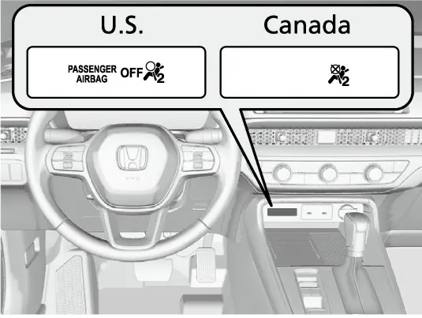
Passenger Airbag Off אינדיקאטאר
וואג-סענסארן אינעם פארנטיגן פאסאזשיר זיץ לעשן אויס דעם פאסאזשיר פארנט עירבעג און קני עירבעג ווען דער זיץ איז ליידיג אדער ווען עס זעט אויס אז א קליין קינד אדער א בעיבי זיצט דארט. דאס ליכט זאגט אייך דאס. ווען עס איז אן, וועט קיינער פון די עירבעגס זיך נישט אויפבלאזן ביי א קראך. לאזט נישט קיין דערוואקסענעם פארן פארנט ווען עס איז אן. קינדער פון 12 יאר און אונטער דארפן שטענדיג פארן ריכטיג צוגעשנאלט אין א הינטערשטן זיץ. ביי ON צינדט זיך דאס ליכט אן און לעשט זיך אויס עטליכע סעקונדעס שפעטער ווי א סיסטעם טשעק. פאר א פאסאזשיר וואס זיין וואג איז נאנט צו דער גרענעץ, קען עס זיך פון צייט צו צייט אנצינדן און אויסלעשן, און א קליינער דערוואקסענער קען נישט דערקענט ווערן ווי א דערוואקסענער.
אויב א דערוואקסענער זיצט און דאס ליכט בלייבט אן, טשעקט די פאלגנדע:
- דער פאסאזשיר זיצט גלייך, ריכטיג צוגעשנאלט, די רוקנלענע נישט צו שטארק אנגעבויגן.
- דער פאסאזשיר לענט זיך נישט אן אויף דער טיר אדער אויף דער מיטל קאנסאל, און ביידע פיס זענען אויף דער פלאר.
- גארנישט הענגט פונעם זיץ; נאר קליינע, לייכטע זאכן זענען אינעם קעשענע הינטער דער רוקנלענע.
- קיין פליסיגקייט איז נישט פארגאסן געווארן אויף אדער אונטער'ן זיץ.
- קיין קינדער-זיץ אדער זאך דריקט נישט אויף דער הינטערשטער זייט פונעם זיץ, און קיין הינטערשטער פאסאזשיר שטופט אדער ציט עס נישט.
- גארנישט איז אונטער אדער לעבן דעם זיץ, און דער הינטערשטער פלאר מאט ליגט גלייך אויפן ריכטיגן ארט.
- די קאפ-שטיצע טשעפעט נישט דעם דאך.
אויב אלעס איז אין ארדנונג און דאס ליכט איז נאך אלץ אן, שטעלט די טראנסמישן אויף P, לעשט אויס דעם power, און שטעלט עס צוריק אויף ON. גייט וואס שנעלער צו א דילער אויב דאס ליכט בלייבט נאך אלץ אן מיט א דערוואקסענעם וואס זיצט, אויב עס איז אויס ווען דער זיץ איז ליידיג, אדער אויב עס מאכט נישט זיין טשעק ביי ON.

דער EPS אינדיקאטאר מיינט א פראבלעם אין פאווער סטירינג סיסטעם, וואס מאכט דעם ראד לייכט צו דרייען. שטעלט זיך אפ אויף א זיכער ארט און צינדט ווידער אן דעם מאטאר. אויב דאס ליכט צינדט זיך ווידער אן און בלייבט אן, לאזט דעם קאר גלייך איבערקוקן ביי א דילער. אויב דער דרייווער אינפארמאציע סקרין ווייזט "Do not drive", שטעלט זיך גלייך אפ אויף א זיכער ארט און פארבינדט זיך מיט א דילער. אן פאווער הילף קען דער סטירינג ווערן אסאך שווערער, דערפאר זייט גרייט דערצו און פארט נישט ווייטער. דער Driver Attention Monitor, באשריבן שפעטער, ארבעט אויך נאר ווען דער EPS אינדיקאטאר איז אויס.
סטאביליטעט און טייערס אינדיקאטארן


דער VSA אינדיקאטאר איז פאר Vehicle Stability Assist, Honda'ס סטאביליטעט קאנטראל. ווען ער בלינקט, ארבעט VSA יעצט צו פארמיידן א גליטש. דאס איז נארמאל אויף גליטשיגע וועגן, און עס איז א סימן צו לאזן אביסל פונעם גאז. אויב ער בלייבט אן, איז דא א פראבלעם מיט VSA, brake assist, hill start assist, דער starting assist brake פונקציע אדער Agile Handling Assist; לאזט עס איבערקוקן. נאך אן אפשליסן פון באטעריע קען ער זיך צייטווייליג אנצינדן; פארט א קורצע שטרעקע איבער 12 mph (20 km/h) און ער זאל זיך אויסלעשן. דער VSA OFF אינדיקאטאר מיינט אז איר האט טיילווייז אויסגעלאשן VSA. אויפן A-type meter טוט מען דאס אינעם VSA Mode סקרין דורך צייכענען "Reduce traction control" (פארמינערן טראקשן קאנטראל) מיט'ן לינקן סעלעקטאר ראדל. קאפיטל 14 דערקלערט ווען דאס איז נוצליך.

TPMS הייסט tire pressure monitoring system (סיסטעם וואס היט דעם טייער דרוק). אויב דאס TPMS ליכט שטייט אן, זענען איינס אדער מער טייערס שטארק נידעריג, אדער דער סיסטעם איז נישט קאליברירט. דרייווט פארזיכטיג, מאכט נישט קיין שארפע קורוון און ברעמזט נישט שטארק, און שטעלט זיך אפ אויף א זיכער ארט. פילט אן די טייערס צו דעם דרוק וואס שטייט אויפן לעיבל ביי דער טיר פונעם דרייווער, און דערנאך קאליברירט דעם TPMS. אויב עס בלינקט בערך איין מינוט און בלייבט דערנאך אן, איז דא א TPMS פראבלעם אדער דער קליינער ספער איז אנגעטון. אין אזא פאל לאזט איבערקוקן דעם טייער, אדער טוט צוריק אן דעם געווענליכן טייער וואס שנעלער און קאליברירט. דאס ליכט קען זיך אנצינדן אויף א קורצע צייט אויב איר רירט זיך נישט אין 45 סעקונדעס נאכ'ן שטעלן ON, ווייל די קאליבראציע איז נאך נישט פארטיג. עס צינדט זיך אויך אן נאך אן אפשליסן פון באטעריע; פארט איבער 12 mph (20 km/h) און עס זאל זיך אויסלעשן. קאפיטל 16 באהאנדלט דרוקן און קאליבראציע.
לייטס, דרייוו מאדָעס און Hill Descent Control
די גרינע פיילן בלינקען מיט אייערע בלינקערס, און ביידע בלינקען צוזאמען ווען איר דריקט דעם האזארד קנעפל. אויב א פייל בלינקט נישט, אדער בלינקט גאר שנעל, איז מסתמא אויסגעברענט א דרויסנדיג לעמפל. רוב פון אייערע לייטס זענען LED טיילן וואס א דילער מוז טוישן. דער הינטערשטער בלינקער אבער ניצט א 21-וואט געל לעמפל, טיפ WY21W. דער Lights On אינדיקאטאר מיינט אז די פארקינג, טעיל און אנדערע דרויסנדיגע לייטס זענען אן. דער בלויער High Beam אינדיקאטאר מיינט אז די הויכע ליכט זענען אן. דער Auto High-Beam אינדיקאטאר צינדט זיך אן ווען אלע באדינגונגען פאר auto high beam זענען דא.


די EX האט דריי דרייוו מאדָעס, Normal, Econ און Snow, און יעדער האט זיין אייגענעם אינדיקאטאר. איר קלייבט אויס דעם מאדָע מיט'ן drive mode סוויטש אויף דער קאנסאל; קאפיטל 14 דערקלערט יעדן מאדָע. דער Hill Descent Control אינדיקאטאר (הילף ביים אראפפארן א בארג) לייכט ווייס ווען דער סיסטעם איז אן און גרייט, און גרין ווען ער האלט טאקע אייער גיכקייט אויף א שטאציגן אראפגאנג. די לאגיק, ווייס-גרייט, גרין-ארבעט, חזר'ט זיך איבער ביי קרוז קאנטראל, ACC און ליין האלטן, אזוי אז אמאל איר לערנט זיך עס, גייט עס אומעטום.
אינדיקאטארן פון די דרייווער-הילף סיסטעמען


דער ACC אינדיקאטאר (Adaptive Cruise Control with Low Speed Follow) לייכט ווייס ווען איר דריקט דעם ACC קנעפל און גרין בשעת דער סיסטעם ארבעט. אויב איר טוישט צו פשוט'ן קרוז קאנטראל, ווייזט זיך אנשטאט דעם דער Cruise Mode אינדיקאטאר: ווייס אין קרוז מאדָע, גרין ווען א גיכקייט איז געשטעלט. דער ACC interval אינדיקאטאר ווייזט דעם אפשטאנד וואס איר האט אויסגעקליבן יעדעס מאל וואס ACC איז אן. דער געלער ACC אינדיקאטאר מיינט א פראבלעם; אויב ער צינדט זיך אן בשעת'ן דרייוון אדער בלייבט אן, לאזט איבערקוקן דעם קאר. ער קען זיך אויך ווייזן נאכ'ן ווידער צושליסן די באטעריע, און דעמאלט ווערט ער אויס ווען מען פארט איבער 12 mph (20 km/h). ער קען זיך צייטווייליג ווייזן ווען מען גייט איבער דעם Maximum Load Limit, און דעמאלט ווערט ACC אויטאמאטיש אפגעשטעלט. קאפיטל 9 באהאנדלט די קנעפלען.


דער LKAS אינדיקאטאר גייט לויט דעם זעלבן סדר. ער לייכט ווייס ווען איר דריקט דעם LKAS קנעפל און גרין ווען LKAS העלפט טאקע האלטן דעם קאר אין ליין. דער געלער LKAS אינדיקאטאר מיינט א פראבלעם; אויב ער בלייבט אן, גייט צו א דילער. ער קען זיך אויך צייטווייליג אנצינדן ווען מען גייט איבער דעם Maximum Load Limit, דערפאר טשעקט קודם די לאסט. LKAS ארבעט צוזאמען מיט Traffci Jam Assist; זעט קאפיטלען 9 און 10.


דער Safety Support אינדיקאטאר פאסט צוזאמען Road Departure Mitigation, דעם Collision Mitigation Braking System (CMBS) און, אויף דער EX, דעם Blind Spot Information סיסטעם. גרין מיינט אלע זענען אן, גרין און גרוי מיינט טייל זענען אויס, און גרוי מיינט אלע זענען אויס. געל מיינט א פראבלעם. געווענליכע סיבות און וואס מען טוט זענען אין דער טאבעלע.
געלער Safety Support אינדיקאטאר: געווענליכע סיבות
| סיבה | וואס צו טון |
|---|---|
| שמוץ אדער בלאטע אויפן ראדאר סענסאר | שטעלט זיך אפ זיכער, ווישט אפ מיט א ווייכן טוך; עס קען נעמען צייט ביז עס לעשט זיך אויס |
| שמוץ ארום דער פארנטיגער קאמערע | שטעלט זיך אפ זיכער, ווישט אפ מיט א ווייכן טוך |
| קאמערע צו הייס אינעווייניג | קילט זי אפ מיט'ן קליימעט קאנטראל; עס ארבעט ווייטער ווען עס איז קיל |
| בלאטע, שניי אדער אייז נעבן דעם blind spot סענסאר, אדער סענסאר צו הייס | רייניגט דעם ארט; עס קומט צוריק ווען עס קילט זיך אפ |
| טונעל, אפענער וועג, נאכט, פארטאגס אדער פארנאכט | צייטווייליג; מען דארף גארנישט טון |
| באטעריע ווידער צוגעשלאסן | פארט איבער 12 mph (20 km/h) |
| מען איז אריבער דעם Maximum Load Limit | פארמינערט די לאסט |
אויב דאס ליכט בלייבט אן נאכדעם וואס איר רייניגט דעם סענסאר אדער די קאמערע, גייט צו א דילער. די parking sensor און Low Speed Braking Control זאכן אין דעם טייל פונעם מאנואל באציען זיך נישט; parking sensors זענען נישט אין דער EX ספעציפיקאציע ליסטע.
Idle-Stop און זיכערהייט אינדיקאטארן


די EX האט Idle-Stop, וואס לעשט אויטאמאטיש אויס דעם מאטאר ביי אפשטעלן צו שפארן בענזין. דער גרינער Auto Idle Stop אינדיקאטאר מיינט אז דאס פאסירט יעצט, אזוי אז א שטילער מאטאר ביי א רויטן ליכט איז נארמאל. דער Auto Idle Stop OFF אינדיקאטאר מיינט אז איר האט אויסגעלאשן דעם סיסטעם מיט זיין OFF קנעפל. דער געלער אינדיקאטאר בלינקט אויב עס איז דא א פראבלעם אינעם סיסטעם; לאזט איבערקוקן דעם קאר ביי א דילער. קיינער פון די איז נישט קיין סיבה זיך צו זארגן בשעת'ן דרייוון; זיי ווייזן נאר דעם צושטאנד פונעם סיסטעם. קאפיטל 4 באהאנדלט ווי Idle-Stop ווירקט אויפן בענזין פארברויך.
דער Auto Idle Stop Suspend אינדיקאטאר ענטפערט א געווענליכע פראגע: "פארוואס האט זיך דער מאטאר דאסמאל נישט אפגעשטעלט?" Idle-Stop ווארט צייטווייליג ווען:
- דער ברעמז פעדאל איז נישט פעסט געדריקט (דריקט אים פעסט).
- די טראנסמישן איז נישט אין D.
- דער סיסטעם גיט פארצוג צו טשארדזשן די באטעריע.
- דער קליימעט קאנטראל גיט פארצוג צו באקוועמליכקייט.
- די קילונג טעמפעראטור איז ארויס פון איר ארבעטס-ראם.
- Snow מאדָע איז אויסגעקליבן.
- די באטעריע טעמפעראטור איז צו נידעריג.
אחוץ דעם פאל פונעם ברעמז פעדאל, איז גארנישט נישט פאלש; דער סיסטעם ארבעט ווייטער אליין ווען די באדינגונגען לאזן.
דער Immobilizer System אינדיקאטאר (קעגן-גנבה סיסטעם) בלינקט אויב דער קאר קען נישט דערקענען דעם שליסל, און דער מאטאר וועט זיך נישט אנצינדן. שטעלט דעם power mode אויף VEHICLE OFF, און דערנאך קלייבט ווידער אויס ON; אויף קאנאדישע מאדעלן, דריקט און האלט דעם ברעמז איידער איר קלייבט אויס ON. אויב ער בלינקט ווידער און ווידער, קען דער סיסטעם זיין קאליע; לאזט עס איבערקוקן. טוישט נישט דעם סיסטעם און לייגט נישט צו קיין מכשירים, ווייל עס קענען אויפקומען עלעקטרישע פראבלעמען. דער Security System Alarm אינדיקאטאר בלינקט ווען דער אלארם איז געשטעלט, וואס דאס איז וואס איר ווילט זען נאכ'ן פארשליסן. קאפיטל 21 באהאנדלט דעם פאב און דעם אלארם.
דער 7-אינטש דרייווער אינפארמאציע סקרין
דער driver information interface (דרייווער אינפארמאציע סקרין) ווייזט ווייטקייט, בענזין פארברויך, מעלדונגען און ווארענונגען. דער אופן טוישט זיך קיינמאל נישט: דריקט home, דרייט דאס לינקע סעלעקטאר ראדל צו דעם אינהאלט וואס איר ווילט, און דריקט דאס ראדל פאר פרטים.
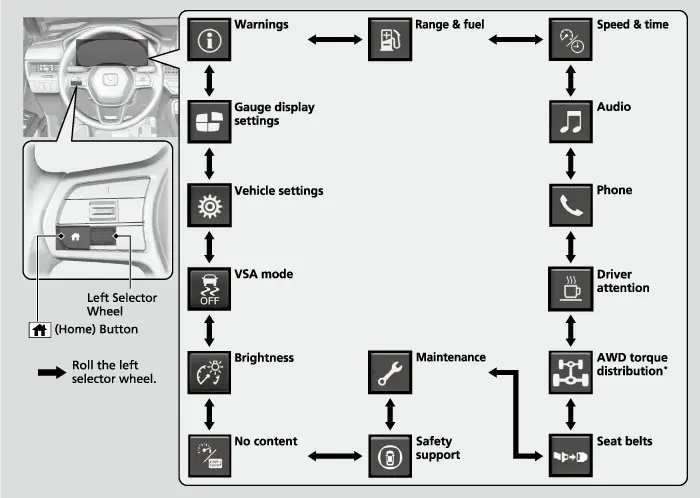
דער היים-סקרין ווייזט א רייע אייקאנס, און איר קלייבט אויס וועלכע עס ווייזן זיך דורך Gauge display settings (מעסטער דיספליי איינשטעלונגען).
אויסקלייבן אייקאנס פאר'ן היים-סקרין
- שטעלט אויף P.
- דרייט דאס לינקע סעלעקטאר ראדל ביז Gauge display settings איז אויסגעקליבן, דערנאך דריקט עס.
- דרייט צו גיין פון אייקאן צו אייקאן און דריקט צו צייכענען אדער אויסמעקן יעדעס איינס.
ווייטקייט, בענזין און טריפ מעטערס
אויפן Range/Fuel/Trip Meter סקרין, דרייט דאס לינקע סעלעקטאר ראדל צו טוישן צווישן טריפ מעטערס A און B. צוויי מעטערס לאזן אייך מעסטן צוויי באזונדערע נסיעות, למשל דאס טעגליכע פארן צו דער ארבעט און די מהלך צווישן אנפילונגען. כדי צו ריסעטן איינעם, ווייזט אים, דריקט דאס סעלעקטאר ראדל און קלייבט אויס Reset; ער גייט צוריק צו 0.0, און דער דורכשניטליכער בענזין פארברויך פאר יענע נסיעה (mpg) ווערט ריסעט מיט אים. דער דורכשניטליכער פארברויך דערהיינטיגט זיך אין געוויסע אפשטאנדן. דער יעצטיגער בענזין פארברויך ווייזט זיך ווי א באר גראף וואס ווייזט ווי לייכט אדער שווער אייער פוס איז יעצט. Range (ווייטקייט) איז די געשאצטע מהלך וואס בלייבט מיט'ן בענזין וואס איז געבליבן, לויט'ן יעצטיגן פארברויך. דאס איז נאר א שאצונג, דערפאר נעמט א נידעריגע נומער ווי א סיגנאל אנצופילן, נישט ווי א הבטחה.
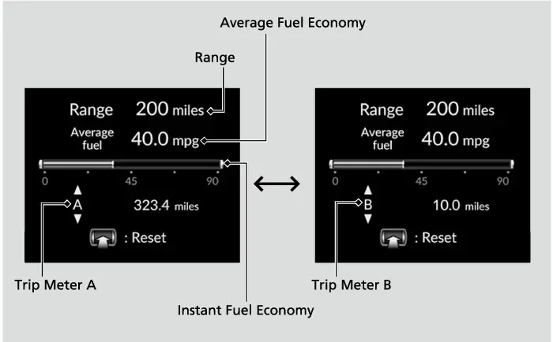
דער Speed/Time/Trip Meter סקרין ווייזט די זעלבע טריפ מעטערס, אויך געטוישט מיט'ן ראדל. ער לייגט צו די צייט וואס איז דורכגעגאנגען און די דורכשניטליכע גיכקייט זינט די לעצטע ריסעט פון יענעם טריפ.
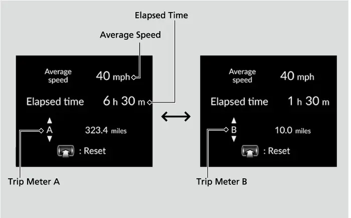
איר קענט טוישן ווען יעדער טריפ ווערט ריסעט. אין Meter setup גיבן "Trip A reset timing" און "Trip B reset timing" יעדער די אויסוואלן When fully refueled (ווען פול אנגעפילט), IGN OFF (ווען מען לעשט אויס(, אדער Manually reset)מיט דער האנט, נאטורליך). די איינשטעלונג ריסעט צוזאמען די מהלך, דעם דורכשניטליכן בענזין פארברויך, די דורכשניטליכע גיכקייט און די דורכגעגאנגענע צייט פון יענעם טריפ. למשל, שטעלט Trip B אויף When fully refueled און יעדער טאנק ווערט זיין אייגענע אויטאמאטישע מעסטונג פון בענזין פארברויך, בשעת Trip A האלט א לאנג-טערמיניגע רעקארד וואס איר ריסעט אליין.
אודיא און טעלעפאן סקרינס
דער Audio סקרין ווייזט וואס שפילט. איר קענט טוישן דעם מקור אן אנצורירן דעם מיטלסטן סקרין.
טוישן דעם אודיא מקור פונעם קלאסטער
- דריקט home און דרייט צו Audio, דערנאך דריקט דאס לינקע סעלעקטאר ראדל.
- דרייט ארויף אדער אראפ דורך FM, AM, iPod, USB, Bluetooth, Apple CarPlay און Android Auto.
- דריקט דאס ראדל צו אויסקלייבן א מקור.
- דריקט home צו גיין צוריק צום קלאסטער היים-סקרין.
טייל מאדָעס ווייזן זיך נאר ווען א פאסיגער מכשיר איז אנגעשלאסן. דער Phone סקרין ווייזט די יעצטיגע טעלעפאן אינפארמאציע פון Bluetooth HandsFreeLink. טעלעפאן פערינג איז אין קאפיטל 8; דער טאטש סקרין אודיא סיסטעם איז אין קאפיטל 7.
Driver Attention Monitor
דער Driver Attention Monitor (דרייווער אויפמערקזאמקייט מאניטאר) אנאליזירט ווי איר דרייט דעם סטירינג צו זען סימנים פון מידקייט אדער אומאויפמערקזאמקייט. אויף זיין סקרין ווייזן ווייסע שטריכן אייער אויפמערקזאמקייט. צוויי שטריכן ברענגען די מעלדונג "Driver attention level low". איין שטריך ברענגט " Driver attention level low. Time for a break", מיט א ביפ און א ציטערן פונעם סטירינג ווייל; שטעלט זיך אפ אויף א זיכער ארט און רוט זיך אפ וויפיל נויטיג. די מעלדונג פארשווינדט ווען איר דריקט home אדער ווען דער סיסטעם באשליסט אז איר דרייווט נארמאל. אויב איר מאכט נישט קיין הפסקה און דער מאניטאר כאפט נאך אלץ אויף שטארקע מידקייט, קומט די מעלדונג צוריק נאך בערך 15 מינוט.
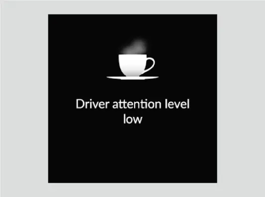
די מעלדונג ווייזט זיך נישט אין די ערשטע 30 מינוט פון א נסיעה. דער מאניטאר ארבעט נאר איבער 25 mph (40 km/h) מיט'ן EPS ליכט אויס, און די שטריכן בלייבן גרוי ווען ער איז נישט אקטיוו. ער קען נישט ארבעטן בשעת LKAS סטירינג הילף איז אקטיוו, אויף נישט-אספאלטירטע אדער אויסגעבויגענע וועגן, אין ווינט, אדער אויב איר טוישט אפט ליינס אדער גיט שטארק גאז. ער ווערט ריסעט ווען מען לעשט אויס דעם מאטאר, אדער ווען דער דרייווער שנאלט זיך אפ און עפנט די טיר בשעת'ן שטיין. אין די איינשטעלונגען קענט איר אויסקלייבן Tactile and audible alert (ציטער און קול, נאטורליך), Tactile alert (נאר ציטער), אדער OFF.
Safety Support און אנדערע סקרינס
דער Safety Support סקרין ווייזט Road Departure Mitigation, CMBS און Blind Spot Information מיט פארבן און אותיות: גרין פאר אן, גרוי פאר אויס, געל פאר א פראבלעם. אויב א סיסטעם ווייזט געל, לאזט גלייך איבערקוקן דעם קאר. כדי אן- אדער אויסצולעשן א סיסטעם, דרייט דאס סעלעקטאר ראדל צום נעקסטן דיספליי, דערנאך קלייבט אויס דעם סיסטעם.
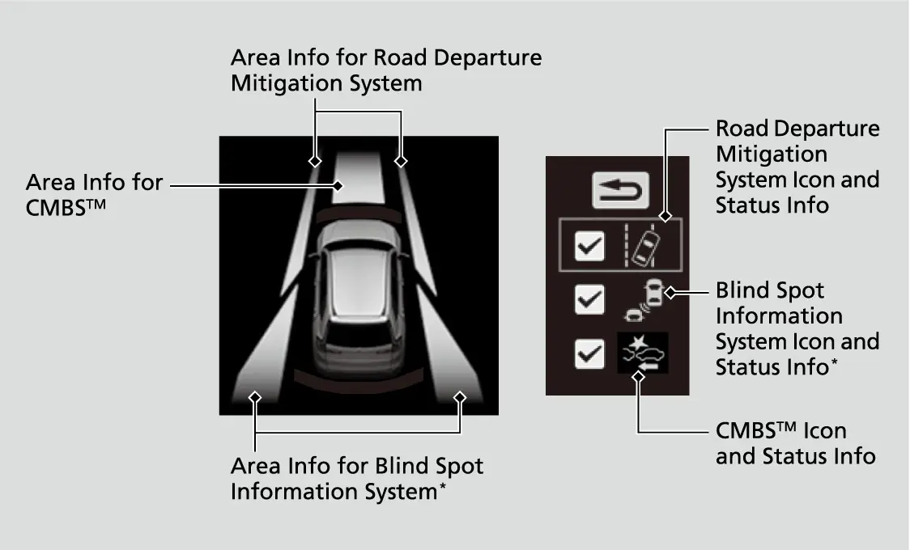
דער Seat Belts סקרין ווייזט ווער איז צוגעשנאלט. דער Maintenance סקרין ווייזט וויפיל אויל לעבן בלייבט און דעם Maintenance Minder (קאפיטל 19). דער AWD Torque Distribution Monitor ווייזט זיך נאר אויף AWD קארס און ווייזט די קראפט צו יעדן ראד; א פראנט-ראד EX האט אים נישט.
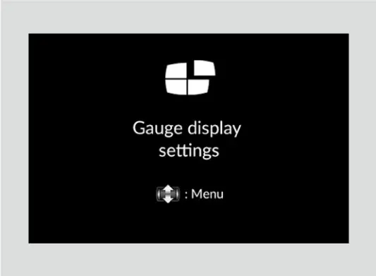
נאך דריי סקרינס פארענדיגן די ליסטע. "No content" מאכט ליידיג די מיטן אזוי אז נאר דער טאכאמעטער ווייזט זיך. אויב איר דריקט און האלט דאס סעלעקטאר ראדל אויף יענעם סקרין, טוישן זיך די איינהייטן צווישן miles/mph און km/km/h, און א באשטעטיגונג סקרין ווייזט זיך עטליכע סעקונדעס. אויפן Brightness סקרין (ליכטיקייט), דריקט דאס סעלעקטאר ראדל, דרייט ארויף צו מאכן ליכטיגער און אראפ צו מאכן טונקלער, דערנאך דריקט ארויסצוגיין. די ליכטיקייט שטעלט זיך אויך אויטאמאטיש לויט דעם ליכט ארום, דערפאר וועט מען נישט זען א טויש וואס איר מאכט אין שטארקן טאג-ליכט. VSA Mode איז וואו איר צייכנט אדער מעקט אויס Reduce traction control. Warnings ווייזט אלע אקטיווע ווארענונג מעלדונגען.
קאר איינשטעלונגען אינעם קלאסטער
איידער איר קענט טוישן איינשטעלונגען, מוז דער power mode זיין אין ON, דער קאר מוז אינגאנצן שטיין, און די טראנסמישן מוז זיין אין P. דערנאך דריקט home, דרייט צום settings סקרין און דריקט דאס סעלעקטאר ראדל. די גרופעס זענען TPMS calibration, Driver assist system setup, Meter setup, Keyless access setup, Lighting setup, Door setup, Maintenance reset און Default all. Default all שטעלט צוריק אלע איינשטעלונגען ווי פון פאבריק. Power tailgate setup און Climate control setup זענען אנגעצייכנט " not on all models"; די EX האט א מאנועלן טעילגעיט, דערפאר איגנארירט די טעילגעיט גרופע.
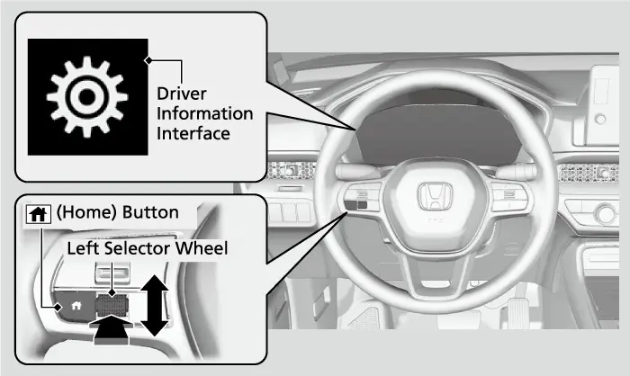
Meter setup איז די גרופע וואס איר וועט מערסטנס באזוכן.
Meter setup אויסוואלן
| איינשטעלונג | אויסוואלן | נאטורליך |
|---|---|---|
| Language selection (שפראך) | olñais / EspaçEnglish / Fran | English |
| Adjust outside temp. display (דרויסנדיגע טעמפעראטור קארעקטור) | -5°F ביז +5°F | 0°F± |
| Trip A / Trip B reset timing | When fully refueled / IGN OFF / Manually reset | Manually reset |
| Adjust alarm volume (באזערס, ווארענונגען, בלינקער קול) | High / Mid / Low | Mid |
| איינשטעלונג | אויסוואלן | נאטורליך |
|---|---|---|
| Fuel efficiency backlight (ambient meter) | ON / OFF | ON |
| Rear seat reminder (דערמאנונג פאר'ן הינטערשטן זיץ) | ON / OFF | ON |
| Speed/distance units (איינהייטן) | km/h-km / mph-miles | mph-miles (אמעריקע) |
| Tachometer | ON / OFF | ON |
דער ביישפיל אינעם מאנואל טוישט Trip A צו ווערן ריסעט ווען מען פילט פול אן. יעדע אנדערע איינשטעלונג גייט אויפן זעלבן סדר: דרייען, דריקן, אויסקלייבן, צוריק.
ביישפיל: שטעלן Trip A צו ווערן ריסעט ווען מען פילט פול אן
- דריקט home, דרייט צום settings סקרין און דריקט דאס לינקע סעלעקטאר ראדל.
- דרייט ביז Meter setup ווייזט זיך און דריקט.
- דרייט ביז "Trip A reset timing" ווייזט זיך און דריקט.
- פון When fully refueled, IGN OFF, Manually reset און Back, דרייט צו When fully refueled און דריקט; דער דיספליי גייט צוריק צום איינשטעלונג מעניו.
- דרייט צו Back און דריקט, און טוט עס נאכאמאל ביז איר קומט צום נארמאלן סקרין.
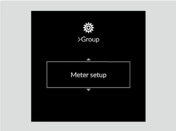
נאטורליכע איינשטעלונגען וואס לוינט צו וויסן
אויסגעקליבענע נאטורליכע איינשטעלונגען אין אנדערע גרופעס
| גרופע | איינשטעלונג | נאטורליך (אנדערע אויסוואלן) |
|---|---|---|
| Door setup | Walk away auto lock | OFF (ON) |
| Door setup | Auto door lock | With vehicle speed (Shift from P / OFF) |
| Door setup | Auto door unlock | All doors when driver's door opens |
| Keyless access | Door unlock mode | Driver door only (All doors) |
| Lighting setup | Auto high-beam | ON |
| Lighting setup | Interior light dimming time | 30sec (60 / 15) |
| Lighting setup | Headlight auto off timer | 15sec (60 / 30 / 0) |
| Lighting setup | Auto light sensitivity | Max(Mid ביז Min) |
| Driver assist | Forward collision warning distance | Normal (Long / Short) |
| גרופע | איינשטעלונג | נאטורליך (אנדערע אויסוואלן) |
|---|---|---|
| Driver assist | Traffic sign display / over-speed warning | ON / OFF |
יעדער פון די סיסטעמען האט זיין אייגענעם קאפיטל: לאקס אין קאפיטל 21, לייטס אין קאפיטל 11, דרייווער הילף אין קאפיטל 9.
דער זייגער
דער קלאסטער זייגער דערהיינטיגט זיך אויטאמאטיש דורך'ן אודיא סיסטעם. Automatic Date and Time ניצט GPS און איז נאטורליך אן, אזוי ווי דער אויטאמאטישער daylight saving time (זומער-צייט). שטעלט דעם זייגער מיט דער האנט נאר אויב עפעס איז נישט ריכטיג; דער power מוז זיין אין ON.
שטעלן דעם זייגער מיט דער האנט
- רירט אן דעם זייגער אויבן אינעם 9-אינטש סקרין, אדער דריקט דעם home קנעפל אויפן סקרין און קלייבט אויס General Settings, System, Date and Time.
- קלייבט אויס Set Date and Time.
- קלייבט אויס Automatic Date and Time, דערנאך קלייבט אויס Off.
- קלייבט אויס Set Date אדער Set Time און שטעלט איין מיט די ארויף און אראפ פיילן.
- קלייבט אויס דעם Back אייקאן צו שפייכלען.
Time Format טוישט צווישן 12-שעה (נאטורליך) און 24-שעה.
לינקער שטעקן: לייטס און בלינקערס
דער עק פונעם לינקן שטעקן דרייט זיך צו OFF, AUTO, פארקינג לייטס און העדלייטס. אין AUTO צינדן זיך די דרויסנדיגע לייטס אויטאמאטיש אן לויט דער ליכטיקייט ארום, יעדעס מאל וואס דער power איז ON. לאזט דעם סוויטש אין AUTO פאר טעגליך דרייוון. אין AUTO ווען עס איז טונקל, צינדן זיך די לייטס אויך אן ווען איר עפנט א טיר און לעשן זיך אויס ווען איר פארשליסט. דער ליכט-סענסאר איז אויבן אויפן דעשבארד; דעקט אים נישט צו. כדי אויסצולעשן די לייטס, דרייט דעם סוויטש צו OFF און לאזט אים אפ בשעת איר זענט אין P אדער מיט'ן פארקינג ברעמז אנגעלייגט. זיי צינדן זיך ווידער אן אויב איר דרייט נאכאמאל צו OFF, אדער אויב איר שיפט ארויס פון P מיט'ן פארקינג ברעמז אפגעלאזט. קאפיטל 11 באהאנדלט העדלייטס אין פרטים.
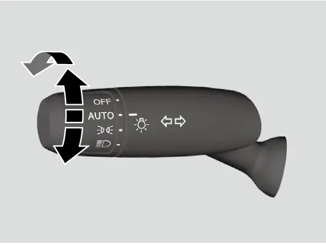
פאר הויכע ליכט, ווען די העדלייטס זענען אן, שטופט דעם לעווער פאראויס; ציט אים צוריק צו גיין צוריק צו נידעריגע ליכט. כדי צו בליצן מיט די הויכע ליכט, ציט דעם לעווער צוריק און לאזט אים אפ. מיט'ן סוויטש אין AUTO, צינדן זיך די העדלייטס אן ווען מען ניצט די ווייפערס עטליכע מאל אין א געוויסע צייט, און לעשן זיך אויס עטליכע מינוט נאכדעם וואס די ווייפערס שטעלן זיך אפ. אין דער פינצטער צינדן זיי זיך אן, נישט קיין חילוק צי מען ניצט די ווייפערס.
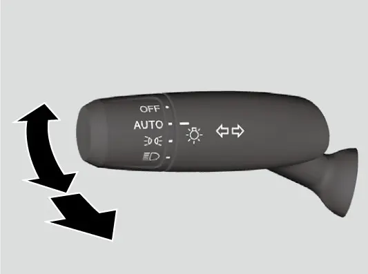
נאכדעם וואס איר שטעלט אויף VEHICLE OFF, נעמט דעם פאב און מאכט צו די טיר פונעם דרייווער, לעשן זיך די לייטס אויס נאך 15 סעקונדעס, נאטורליך. אויב איר לעשט אויס מיט די העדלייטס אן אבער עפנט נישט די טיר , לעשן זיי זיך אויס נאך 10 מינוט, אדער 3 מינוט אין AUTO. א דערמאנונג קלינגט ווען איר עפנט די טיר פונעם דרייווער מיט די לייטס אנגעצונדן.
בלינקערס ארבעטן מיט'ן power אין ON. שטופט דעם שטעקן גאנץ ארויף אדער אראפ פאר א געווענליכן בלינקער וואס לעשט זיך אויס ווען דער ראד גלייכט זיך אויס. פאר טוישן ליינס, ניצט דעם one-touch signal (איין-טאפ בלינקער): שטופט לייכט ארויף אדער אראפ און לאזט אפ, און דער בלינקער בלינקט 3 מאל. א לייכטער שטופ אין דער פארקערטער ריכטונג בשעת ער בלינקט שטעלט אים אפ. אויף א פולן הייוועי גיט איין לייכטער טאפ דריי קלארע בלינקן אן האלטן דעם שטעקן.
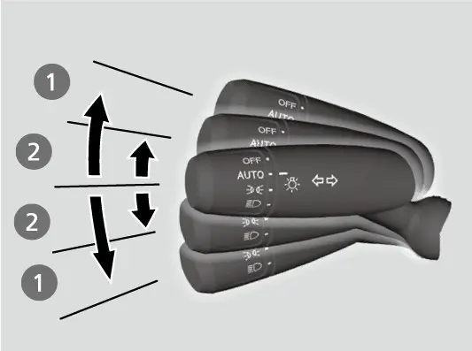
רעכטער שטעקן: ווייפערס און וואשערס
דער רעכטער שטעקן קאנטראלירט די ווייפערס מיט'ן power אין ON. רירט אים ארויף אדער אראפ פאר OFF, INT (מיט אפשטעלן), LO און HI. MIST לאזט די ווייפערס גיין שנעל ביז איר לאזט אפ דעם לעווער. דרייט דעם איינשטעל-רינג צו טוישן די צייט צווישן די וויש ביי INT. די צייט ווערט קירצער ווען די גיכקייט שטייגט, און ביי גיכקייט ווערט די קירצסטע איינשטעלונג די זעלבע ווי LO. ציט דעם לעווער צו אייך צו שפריצן וואשער פליסיגקייט. לאזט אים אפ פאר מער ווי איין סעקונדע און די ווייפערס ווישן נאך צוויי אדער דריי מאל, דערנאך שטעלן זיי זיך אפ. דער ווייפער מאטאר קען זיך אפשטעלן אויף א קורצע צייט צו פארמיידן איבערלאדונג און קומט צוריק צו נארמאל אין עטליכע מינוט.
דער הינטערשטער ווייפער סוויטש האט OFF, INT און ON. דרייט אים איבער ON צו דער וואשער פאזיציע צו שפריצן אויף דער הינטערשטער שויב, און האלט אים דארט. ווען איר לאזט אפ, הערט אויף דאס שפריצן און דער ווייפער גייט צוריק צו זיין איינשטעלונג נאך עטליכע וויש. אויב די פארנטיגע ווייפערס גייען ווען איר שיפט אין R, ארבעט דער הינטערשטער ווייפער אויטאמאטיש אפילו ווען זיין סוויטש איז אויס. ער גייט מיט אפשטעלן ווען די פארנטיגע זענען אויף INT, און כסדר מיט LO אדער HI.
ווינטער קענען די גומעס צופרירן צום גלאז, דערפאר ווארעמט קודם אן די שויב מיט'ן דעפאגער. אויב שניי שטעלט אפ די ווייפערס, פארקט זיכער, דרייט דעם סוויטש צו OFF, שטעלט דעם power אויף ACCESSORY אדער VEHICLE OFF, און רייניגט אפ דעם שניי. רירט די ארעמס צו דער maintenance פאזיציע איידער איר הייבט זיי אויף.
ENGINE START/STOP קנעפל און power מאדָעס
מיט'ן פאב אינעם קאר, דריקן דעם קנעפל אן דעם ברעמז פעדאל גייט דורך VEHICLE OFF, ACCESSORY, ON, און צוריק צו VEHICLE OFF. VEHICLE OFF מיינט אז דער power איז אויס. ACCESSORY לאזט ניצן דעם אודיא סיסטעם און טייל צוגאבן. ON לאזט אלע צוגאבן און מען דארף עס פאר די מעסטערס, ווייפערס און בלינקערס. אנצינדן דעם מאטאר פאדערט דעם ברעמז פעדאל און ווערט באהאנדלט אין קאפיטל 3. אויב איר דריקט דעם קנעפל אין ON ווען איר זענט נישט אין P, גייט דער קאר צו ACCESSORY, נישט אויס. אויב דער פאב איז אין א שופלאד וואו זיין סיגנאל ווערט אפגעשטעלט, קען דער מאדָע זיך נישט טוישן.
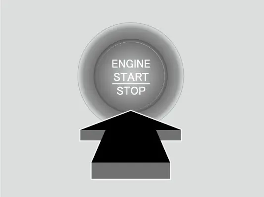
עטליכע שוצן ארום דעם קנעפל:
- געלאזט אין P און ACCESSORY פאר 30 ביז 60 מינוט, טוישט זיך דער קאר צו א מאדָע ענליך צו VEHICLE OFF צו שפארן די באטעריע.
- עפענען די טיר פונעם דרייווער אין ACCESSORY גיט א ווארענונג ביפ.
- ארויסנעמען דעם פאב און צומאכן די טיר מיט'ן power אן קלינגט אן אלארם: נאר דרויסן אין ACCESSORY; אינעווייניג און דרויסן פלוס א קלאסטער ווארענונג אין ON.
- דער אלארם הערט אויף ווען דער פאב איז צוריק אין די ראם און אלע טירן זענען צו; דורכגעבן דעם פאב דורכ'ן פענסטער ארויס צינדט אים נישט אן.
- אמאל דער מאטאר לויפט אן דעם פאב אינעם קאר, קענט איר אים נישט ווידער אנצינדן אדער טוישן power מאדָעס.
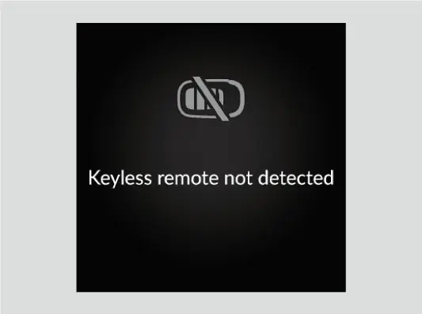
הינטערשטער דעפאגער און אינעווייניגע לייטס
דער rear defogger קנעפל (הינטערשטער דעפאגער) אויפן קליימעט פאנעל הייצט די הינטערשטע שויב און, אויף דער EX, אויך די זייט שפיגלען, מיט'ן power אין ON. ער לעשט זיך אויס אליין נאך 10 ביז 30 מינוט לויט דער דרויסנדיגער טעמפעראטור, אבער ביי 32°F (0°C) אדער נידעריגער לעשט ער זיך נישט אויס אליין. ער ניצט אסאך קראפט, דערפאר לעשט אים אויס ווען דאס גלאז איז קלאר. לאזט אים נישט גיין לאנג ווען דער מאטאר לויפט אויפן ארט, אנדערש קען די באטעריע שוואך ווערן און מאכן שווער אנצוצינדן. אונטער 41°F (5°C) קענען די געהייצטע שפיגלען זיך אויטאמאטיש אנצינדן פאר 10 מינוט. דער רעשט פונעם קליימעט פאנעל ווערט באהאנדלט אין קאפיטל 12.
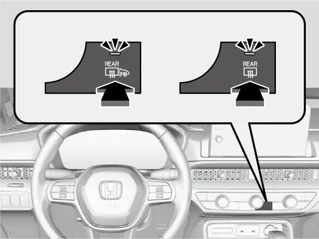
דער אויבערשטער אינעווייניגער ליכט סוויטש האט דריי פאזיציעס. ON האלט די לייטס אן נישט קיין חילוק וואס מיט די טירן. Door activated (לויט די טירן), די טעגליכע פאזיציע, צינדט זיי אן ווען א טיר עפנט זיך, ווען די טיר פונעם דרייווער ווערט אויפגעשלאסן, אדער ווען איר שטעלט אויף VEHICLE OFF. זיי ווערן לאנגזאם אויס בערך 30 סעקונדעס נאכדעם וואס די טירן מאכן זיך צו. OFF האלט זיי אויס. די לייטס לעשן זיך גלייך אויס ווען איר פארשליסט די טיר פונעם דרייווער, מאכט זי צו אין ACCESSORY, אדער שטעלט דעם power אויף ON. אויב א טיר בלייבט אפן ווען דער קאר איז אויס, לעשן זיי זיך אויס נאך בערך 15 מינוט צו שוצן די באטעריע.
דריקט די מאפ ליכט שאלטערס צו אנצינדן און אויסלעשן די מאפ לייטס. ווען דער הויפט סוויטש איז אין Door activated און א טיר איז אפן, וועט דריקן א מאפ ליכט שאלטער עס נישט אויסלעשן; אמאל די טיר איז צו, ארבעט עס נארמאל. די לייטס אינעם לאסט-פלאץ צינדן זיך אן ווען איר עפנט דעם טעילגעיט.
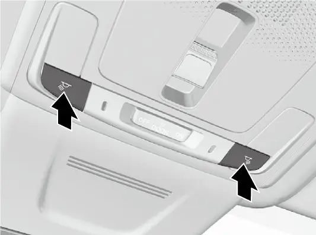
אפטע פראגעס
פראגע: מיין מאנואל דערמאנט א B-type meter און א רעכטן סעלעקטאר ראדל. באציט זיך דאס צו מיר?
ענטפער: ניין. די EX האט דעם 7-אינטש A-type meter. B-type אנווייזונגען באציען זיך צום 10.2-אינטש קלאסטער פון דער EX-L; אויף אייער קאר, ניצט דעם home קנעפל און דאס לינקע סעלעקטאר ראדל.
פראגע: די געלע ברעמז, VSA, ACC און TPMS לייטס האבן זיך אנגעצונדן נאכ'ן טוישן די באטעריע. איז עפעס צעבראכן?
ענטפער: מסתמא נישט. די סיסטעמען ווערן צייטווייליג אויסגעלאשן נאכ'ן ווידער צושליסן די באטעריע. פארט א קורצע שטרעקע איבער 12 mph (20 km/h) און די לייטס זאלן זיך אויסלעשן; אויב נישט, גייט צו א דילער.
פראגע: פארוואס האט זיך דער מאטאר נישט אפגעשטעלט ביי א רויטן ליכט?
ענטפער: קוקט פאר'ן Auto Idle Stop Suspend אינדיקאטאר. Idle-Stop ווארט ווען דער ברעמז איז נישט פעסט געדריקט, איר זענט נישט אין D, Snow מאדָע איז אן, די באטעריע דארף טשארדזשן אדער איז קאלט, דער קליימעט קאנטראל דארף פארצוג, אדער די קילונג איז ארויס פון איר ראם.
פראגע: פארוואס קען איך נישט עפענען דעם settings מעניו?
ענטפער: איינשטעלונגען זענען נאר פאראן ווען דער power איז אין ON, דער קאר שטייט אינגאנצן, און די טראנסמישן איז אין P.
פראגע: ווי מאך איך אז יעדער בענזין טאנק זאל זיין זיין אייגענע מעסטונג פון בענזין פארברויך?
ענטפער: אין Meter setup, שטעלט "Trip B reset timing" אויף When fully refueled. Trip B, זיין דורכשניטליכער בענזין פארברויך, דורכשניטליכע גיכקייט און דורכגעגאנגענע צייט ווערן דעמאלט ריסעט יעדעס מאל וואס איר פילט אן.
פראגע: דאס check engine ליכט האט געבלינקט פינף מאל ביים אנצינדן און זיך אויסגעלאשן. דארף איך זיך זארגן?
ענטפער: ניין. דאס מיינט נאר אז די emissions readiness codes זענען נאך נישט געשטעלט. א ליכט וואס בלייבט אן אדער בלינקט בשעת'ן דרייוון איז אנדערש; גייט לויט די טריט אין דעם קאפיטל.
הויפט פונקטן
- די EX האט דעם A-type 7-אינטש מעטער; איגנארירט B-type אנווייזונגען אינעם מאנואל.
- דער home קנעפל מיט'ן לינקן סעלעקטאר ראדל עפנט יעדן קלאסטער סקרין און איינשטעלונג.
- רויט מיינט אפשטעלן יעצט, געל מיינט לאזן איבערקוקן, ווייס מיינט גרייט, גרין מיינט ארבעט.
- רויטע און געלע ברעמז לייטס צוזאמען מיינען זיך גלייך זיכער אפשטעלן און פארבינדן מיט א דילער.
- א בלינקענדיג check engine ליכט מיינט א misfri e: שטעלט זיך אפ, לאזט אפקילן 10 מינוט, דערנאך פארט נישט שנעלער ווי 31 mph צו א דילער.
- "Engine oil pressure low": שטעלט זיך אפ, ווארט דריי מינוט, טשעקט די אויל; אויב די מעלדונג בלייבט מער ווי 10 סעקונדעס נאכ'ן ווידער אנצינדן, לעשט אויס דעם מאטאר.
- איינשטעלונגען פאדערן ON, אינגאנצן שטיין און P; Walk Away Auto Lock איז נאטורליך אויסגעלאשן.
- האלט דעם ליכט סוויטש אין AUTO און ניצט דעם איין-טאפ בלינקער פאר דריי בלינקן ביים טוישן ליינס.